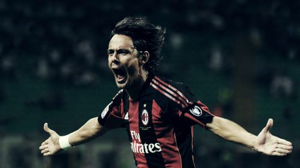
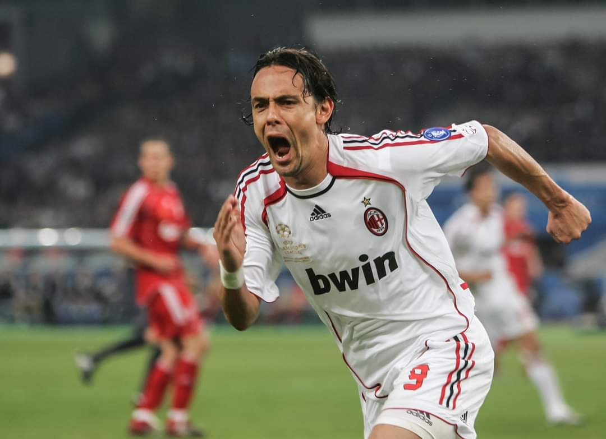
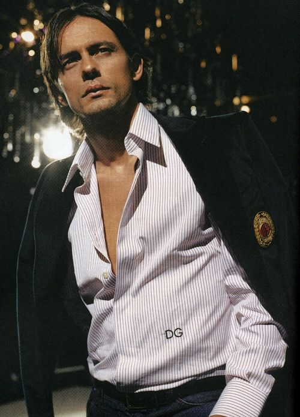
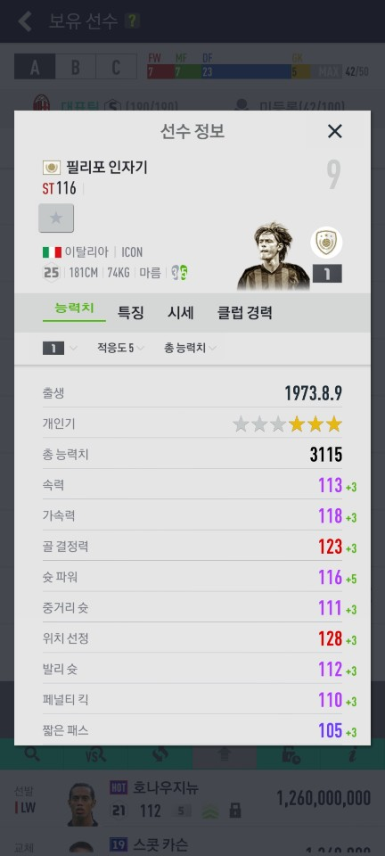
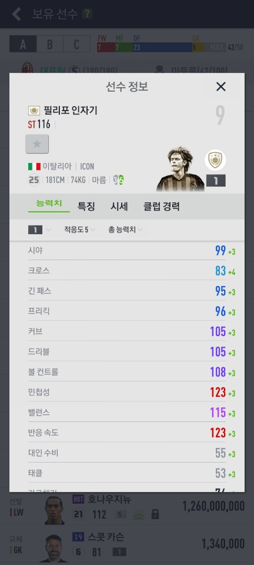
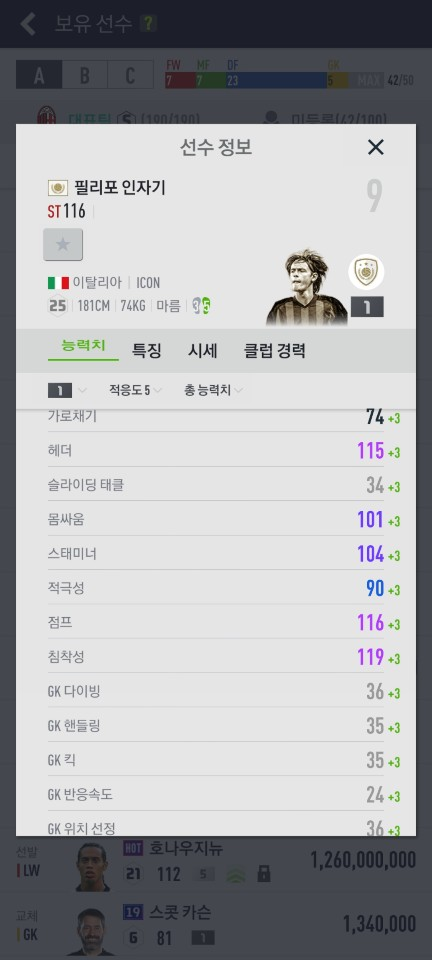

현재는 감독으로 뛰는 중인 위치선정의 신, 인자기가 아니라 공이 인자기를 찾는다는 전설의 선수 자기에 대해 알아보자.

기본정보
출생:1973년 8월 9일 (47세) /이탈리아 에밀리아로마냐주 피아첸차
국적:이탈리아
신체:키 181cm ｜ 체중 74kg
직업:축구선수 (스트라이커 / 은퇴)축구감독
선수 산니콜로 (1982~1985 / 유스)
피아첸차 칼초 (1985~1991 / 유스)
피아첸차 칼초 (1991~1995)
SC 레페 (1992~1993 / 임대)
엘라스 베로나 (1993~1994 / 임대)
파르마 FC (1995~1996)
아탈란타 BC (1996~1997)
유벤투스 FC (1997~2001)
AC 밀란 (2001~2012)
감독
AC 밀란 (2012~2014 / 유스 )
AC 밀란 (2014~2015)
베네치아 FC (2016~2018)
볼로냐 FC (2018~2019)
베네벤토 칼초 (2019~ )
국가대표:57경기 25골 (이탈리아 / 1997~2007)
2001년부터 AC 밀란으로 이적하여 은퇴할 때까지 활약했다. 별명은 수페르 피포(위대한 골잡이).
선수소개
인자기는 동료 축구 선수이자 친동생인 시모네 인자기와 함께 고향 클럽 피아첸차 칼초에서 축구 선수 생활을 시작하였다.
1995년 파르마로 이적하여 세리에 A 데뷔전을 치렀으나, 파르마에서 뛴 15경기 동안 단 2골만을 득점하였다. 다음 시즌 아탈란타로 이적하였고, 24골을 넣으며 세리에 A 득점왕을 차지하였다. 이 때의 활약으로 유벤투스로 이적하였다.
유벤투스에서 122경기 동안 58골을 넣었음에도 2001-02 시즌, 새로 영입된 다비드 트레제게에게 밀려 팀을 떠나게 된다.
2001-02시즌 마르첼로 리피의 개혁의 일환으로 내쳐진 유벤투스의 필리포 인자기를 밀란 구단주인 베를루스코니가 사재 7000만 유로를 풀어 AC 밀란으로 영입하나, 인자기는 무릎 부상으로 인해 시즌의 절반 동안 뛰지 못하였다. 하지만 부상에서 복귀한 뒤 부터는 4-1-2-1-2 포메이션에서 안드리 셰브첸코와 함께 투톱으로 뛰며 밀란의 공격진을 이끌었다.
워낙 스타일이 오프사이드 라인과 함께 살아온 양반이라 현역 시절 오프사이드에 관해선 '인자기가 곧 오프사이드고 오프사이드가 곧 인자기다.', '인자기가 오프사이드 아니라 하면 아닌거다'라는 시쳇말들도 있었기 때문에(...). 그리고 기가 막힌 온사이드 골로 위장하기 위해 골 셀레브레이션을 더욱 열심히 했다
노쇠한 이후 주로 백업 멤버로 활약하였음에도, 2010년 5월 21일 2011년 6월 30일까지의 1년 연장 계약도 하였으나 팔레르모전에서 십자인대 파열 부상으로 사실상 시즌아웃. 그리고 결국 5월 11일 편지를 남겨 AC 밀란과의 재계약을 하지 않을 것임을 밝혔다.
노바라와의 고별경기에서 후반 22분 교체 투입되어 15분만인 후반 37분에 오프사이드 트랩을 절묘하게 돌파하며 자신의 마지막 경기를 지극히 인자기스러운(...) 골로 장식하였다.
위는 경기 관련 영상. 1분 3초부터 국내 팬들에게는 일명 밀란 할아버지로 유명한 해설자가 다른 선수들의 골에는 평범하게 반응하다가 인자기의 골이 터지자 감정을 억누르지 못하고 감격하다 못해 오열하는 모습을 볼 수 있다. 밀란 팬들에게 인자기가 어떤 의미를 가지는지 단적으로 보여주는 인상적인 장면이다.
인자기의 플레이 스타일을 한마디로 요약하자면 포처의 화신(化身)이라고 할 수 있다. 신들린 위치선정과 정점의 골 결정력, 신묘한 축구지능, 순간 속도를 이용하여 득점할 수 있는 위치를 찾아들어가는, 일명 골냄새를 맡는 능력을 가장 귀신같이 보여주는, 포처 바로 그 자체가 인자기이다. 세계 축구사를 통틀어서 포쳐 스타일의 공격수들은 있었지만, 인자기와 같은 스타일은 굉장히 특이하며 나오기 힘들고, 나와도 대성하기 힘든 스타일의 선수다.
최전방 공격수임에도 몸싸움이 약한 편이고, 주력도 그렇게 빠르지 않고 드리블도 뛰어난 수준은 아니었다. 오히려 수비수를 제치는 개인기는 기량미달이라는 이야기가 나올 정도였다. 그러나 이러한 단점들에도 불구하고 빈 틈으로 쇄도할 때의 순간 속도와, 볼의 경로를 예측하는 능력, 패스를 받을 수 있는 위치 선정, 오프사이드 트랩을 깨는 능력이 세계 최고 수준이었다.
몸싸움이 약한 편임에도 그를 상쇄하는 낙하 지점 선점 능력과 높은 점프력 덕분에 헤더도 잘했다. 키가 별로 크지 않음에도 공중볼 다툼에도 일가견이 있는 선수였으며, 실제 골 수를 봐도 헤더골의 비중이 굉장히 높은 편.

인자기는 좋은 위치를 선점하기 위해 끊임없이 움직인다. 이 탓에 수비하기 굉장히 까다로운 선수인데, 경기 중 인자기만 보고 있으면 이걸 느낄 수가 있다. 일단 공격진영으로 공이 넘어옴과 동시에 인자기는 산만하다 싶을 정도로 끊임없이 전후좌우로 움직이면서 골을 넣을 수 있는 공간을 찾기 위해 움직인다. 이는 인자기가 스피드가 아주 빠르진 않더라도 상당한 체력과 기동력을 갖추고 있었다는 말도 된다.
'위치 선정'에 대한 흔한 오해 중 하나는 '받아 먹는다'인데, 실력이 없는 공격수라면 이렇게 아주 운 좋은 상황에서 주워먹기식 득점으로만 연명하기는 힘들다. 한두 경기에서야 그럴 수 있겠지만, 인자기는 거의 매 경기에서 그런 장면을 한 번 쯤은 만들어 냈다면 이것도 엄연한 실력인 것. 그만큼 상당한 기동력과 체력으로 골대 근처를 이리저리 비집고 다니며 루즈볼을 따내거나 동료 공격수나 미드필더들의 패스를 받기 위해서 좋은 위치를 선점한다는 것인데, 이는 한편으로는 볼에 대한 집념이 대단하다는 말도 된다. 또한 수비수들의 실수를 노리며 끊임없이 전방 압박을 하는 모습도 보인다. 수비수들한텐 정말 성가신 공격수인 셈.
그의 골 장면을 보면 어째 존재감이 없다가, 어디선가 갑자기 툭 튀어나와서 골을 넣고 사라지는 것처럼 보이는 장면이 많으며, 이에 따라 싫어하는 사람들은 '주워먹기의 달인', '줍자기'등으로 깐다. 경기 내적으로 봐도 툭하면 클로킹되는 일이 많아서 '닌자기'라고 까이기도 했지만, 89분 안보이다 상대 패널티 에어리어 근처에서 단 1분이라도 보이면 어떻게든 한골은 만들어내던 본능적인 킬러였다.
단순히 위치선정이 개쩐다 하는 수준을 넘어 그냥 공이 인자기를 따라다닌다고 보면 된다.
다만 이러한 플레이 스타일 때문인지 원톱 스트라이커 롤을 소화해내는 데는 무리가 있었으며, 실제로 스트라이커 두 명을 둔 투톱 체제에서 많이 뛰었다. 원톱의 경우 피지컬은 물론, 동료 선수들과의 연계 플레이 능력이 받춰줘야 하는데, 인자기에게 이런 면모는 없었다.
요약하자면 떨어지는 피지컬과 매우 낮은 테크닉을 최고의 골 결정력과 오프 더 볼 능력으로 커버한 선수. 멋있게 넣든 쉽게 넣든 지저분하게 넣든 주워서 넣든 모두 골이므로 어찌보면 한 골이라도 더 많이 넣는 팀이 이긴다는 축구의 대원칙에 가장 충실했던 선수가 바로 인자기였다.
수상 경력
세리에 A 득점왕: 1996-97
세리에 A 올해의 영플레이어: 1996-97
UEFA 챔피언스 리그 결승전 맨 오브 더 매치: 2007
글로브 사커 어워드 선수 경력 상: 2016
AC 밀란 명예의 전당
여담
가장 존경하고 우상으로 꼽는 선수를 마르코 판바스턴을 뽑았다.
현재 라치오 감독인 동생 시모네 인자기도 축구선수이며 SS 라치오에서 공격수로 활약하다 얼마 전 형보다 먼저 은퇴했다. 형제간의 우애는 굉장히 좋으며 아직 미혼인 인자기(형)가 조카 토마소 인자기를 굉장히 귀여워 한다고. 토마소를 자기 은퇴경기까지 데리고 나올 정도. 형제가 같이 이탈리아 A대표팀에 차출 된적 있다. 2000년 3월 29일 스페인전에서 둘이 함께는 아니지만 둘다 그라운드를 밟았고, 2001년 11월 잉글랜드와 루마니아와의 친선전에선 둘이 조금이지만 같이 뛰었다. 한편 은퇴 이후 감독으로서 둘의 행보는 역전되며 갈모형제가 되었다. 그나마 요즘은 피포가 베네벤토에서 감독으로 좋은 모습을 보여주고 있다.
골 세레모니를 굉장히 열정적으로 하기로 유명하다. 포효하면서 세리머니를 하는데 본인에게는 그 골이 페널티킥이건 관광게임의 쐐기골이건 역전 결승골이건 매 골이 마법같은 순간이기 때문이라고. 덕분에 아탈란타 시절, 관광게임에서 추가골을 넣고서 역전 결승골마냥 환호하다가 상대 팀 선수들이 단체로 달려든 적도 있다(...) 동료였던 크리스티안 비에리는 자신은 의도치 않게 들어간 골은 절대 세리머니 하지 않았는데 아는 사람 중에 뒤통수 맞고 들어가도 결승골 넣은 것 처럼 좋아하는 사람도 있다며 농담으로 디스한 적도 있다.
취미는 송로버섯 채취. 송로가 굉장히 귀한 버섯이기에 팬들은 여기서도 그의 위치 선정 능력이 발휘되는 것으로 추측하고 있다.

수트빨이 굉장히 잘 받는다.
문제는 한 동료가 자서전에서 밝힌 그의 습관 및 징크스. 인자기는 매 경기 10분 전부터 똥을 아주 많이쌌으며 기겁하는 동료들에게 "이게 나한테 행운을 가져다 준다고, 얘들아."(...)
2004년 동남아 몰디브에서 휴가를 보내다가 난데없이 대지진이 발생하여 쓰나미가 몰려왔다. 이 쓰나미로 수많은 사상자와 실종자가 발생했지만 인자기는 당시 스쿠버다이빙 중이어서 쓰나미의 영향을 거의 안 받고 살아남아 가까스로 귀국행 비행기를 타고 돌아왔다. 쓰나미는 그 특성[21]상 바다 깊숙한 곳일 수록 피해가 적기 때문이다. 이 사건을 계기로 축구팬들은 과연 쓰나미도 피해가는 인자기의 위치선정(...)이라 칭송하였다고...
위치선정도 나이는 피해갈 수 없는 건지 지금은 눈가에 주름이 가득하다.. 그런데 대체 결혼은 언제하는 걸까? 인자기가 여성 편력이 화려하다는 얘기는 있지만 그 것보다 밤 10시면 무조건 잠들고 점심,저녁 메뉴도 항상 똑같은 것을 먹을 정도로 자기관리가 철저한 사람이라 결혼할 틈이 없는 듯 하다. 화려한 싱글 라이프를 즐기는 걸로도 유명하기에...
좋아하는 캐릭터는 미키 마우스라고 한다.
회계사 자격증을 소지하고 있다.
이상형은 모니카 벨루치라고 한다.
어두운 색을 좋아한다고 한다.
경기 전에 음악을 즐겨 듣고 그날 경기에서 좋은 활약을 펼쳤다면 경기가 끝난 후에 같은 음악을 반복해서 듣는 습관이 있다.
<
젊은 시절 정말 잘생기기로 유명했다. 또 연예인 킬러로도 유명하다.
피파에서의 인자기
정말 신에게 선물 받은 게 아닌지 의심 될 정도의 미친 위치선정 능력. 그랬기에 스트라이커로써 필요한 대부분의 능력이 평범했음에도 전설적인 선수가 되었다. 하지만 피파는 역시 게임. 신의 능력을 반영할 수는 없었나 보다. 물론 단점들은 완벽하게 반영되어 있다.

가장 좋아하는 3명의 선수 중 한명. 그런데 대부분이 뻥스텟이다. 침투 자체는 대장급에도 못 미치고 그나마 공간창출은 조금 하지만 이 역시 80억 가치는 없다. 주워먹기는 확실히 좀 한다. 인자기라 의식돼서 그런건가?
골결과 침착성은 정말 욕 나올 정도이다. 넣어줘야 할 땐 넣는 것이 인자기인데 못 넣는다. 이건 인자기가 아니다.
시즌카는 쓰레기기는 해도 싸기라도 하지, 아이콘은 미페간지 떄문인지 가격까지 미쳤다. 나 역시 그에 홀려 샀지만 현재 후회 중이다. 내 팀가치는 떨어지겠지만 사실을 말하는거다.
물론 인자기가 주워먹어줬음 하는 상황에는 있어주기 때문에 그럴 때 넣어주면 감성이 터지긴 하지만... 80억은 선 넘었다. 하지만 인자기 중에서는 가장 좋은 카드이기에... 인자기가 목적인 사람들은 선택권이 없다. 감성 빼면 대장제외하고 비교해봤을 때 30억 수준이라고 개인적으로 생각했다. 에효...
지금까지 개존잘 신급 위치선정. 지금까지도 호불호 심하게 갈리는 그. 슈페르피포 인자기에 대하여 알아봤다.